As explained earlier, two things play a crucial role in price action trading:
The 'Key Price Levels' can be identified through many methods. But identifying them through Support/Resistance by drawing trend lines is the most effective method.
Many traders consider support and resistance concepts as basic trading concepts, and hence they look for some complicated analysis. But simple things can create wonders in life as well as in trading. I request you to have an open mind and read this chapter thoroughly. I promise you that your ideas and understanding of support and resistance will change forever.
A trader who uses an indicator will have a reference level with an indicator to plan a trade. It can be simple concepts like M.A. crossover, Bollinger Band breakout, or overbought/oversold scenario. However, a price action trader doesn't have this luxury as he has only 'Price' and 'Volume' in his arsenal.
One can only use Volume for confirmation in the trade setup. Hence, a price action trader has to depend entirely on the 'Price' to plan his trades. It appears as a drawback to the price action traders. But in my opinion, it is a boon for them because they have to study the price in-depth, which is where 'Support' and 'Resistance' play a crucial role.
A Trend Line is a straight line drawn on a chart by connecting two or more price peaks, which reveals the script's trend, support & resistance points, and allows one to spot any excellent trade opportunities.
Below are some useful references to draw a trend line:
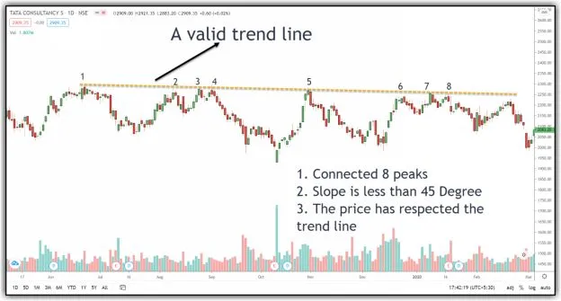
Image 3.1 – A Valid Trend Line Example in TCS
The above image shows an example of a valid trend line. It has connected around 8 price peaks. The slope of the trend line (w.r.t imaginary horizontal line) is less than 45 degrees, and the price has respected the trend line from the beginning to the end.
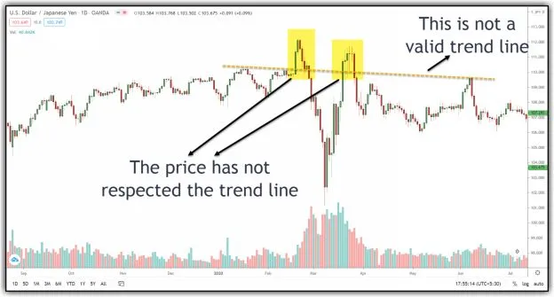
Image 3.2 – An Invalid Trend Line Example in USD-JPY
he trend line which is drawn in image 3.2 is invalid. Because, it has not respected the trend line.
The power of a trend line decreases when the price doesn't respect it in between. Always look to draw a clear trend line connecting many price peaks.
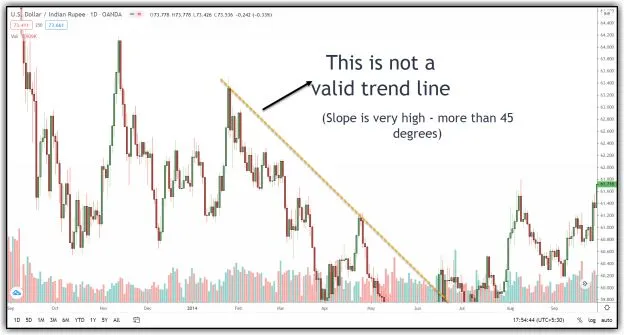
Image 3.3 – An Invalid Trend Line Example in USD-INR
Once again, the trend line which is drawn in image 3.3 is invalid. Because the slope of the trend line is more than 45 degrees (compared to the imaginary horizontal line), it is not a sign of a healthy trend. So, it's better to ignore such a trend line.
A support is the price level at which demand is strong enough to prevent any further fall in the price.
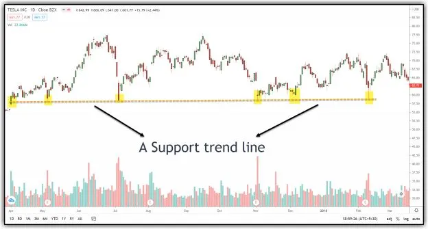
Image 3.4 – A Support Trend line example in Tesla INC
The above image shows an example of a support trend line. The logic is straightforward. People do remember their entry or exit levels either because of pleasure or pain. It would have been pleasure to have made profits or pain if they had lost money.
Hence, whenever the price falls towards support and gets cheaper, buyers become more inclined to accumulate the stock. By the time the price reaches the support level, it is evident that demand will overcome supply and prevent the price from falling below support.
In image 3.4, whenever the price corrected to 58-59 levels, buyers accumulated the stock, and hence it bounced from this level.
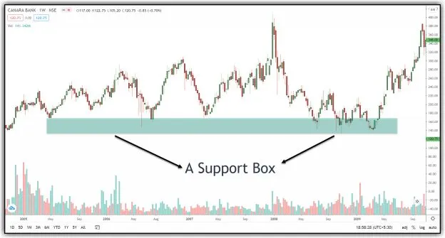
Image 3.5 – A Support Box example in Canara Bank
The market is dynamic, and we can’t expect that a single price level acts as support every time. Sometimes, a small range of price levels will serve as support, which can be called a 'Support Box.' In image 3.5, the price range between 130-160 acted as a support box.
A resistance is a price level at which selling is strong enough to prevent the price from rising further.
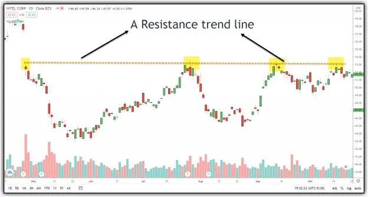
Image 3.6 – A Resistance Trend line example in Intel Corp
The above image shows an example of a resistance trend line. The price
level 53 acted as resistance.
As the price moves towards resistance, sellers will be more active, and
buyers will be less inclined to buy. By the time price reaches the resistance
level, the supply will overcome the demand and stops the price from rising
above resistance.
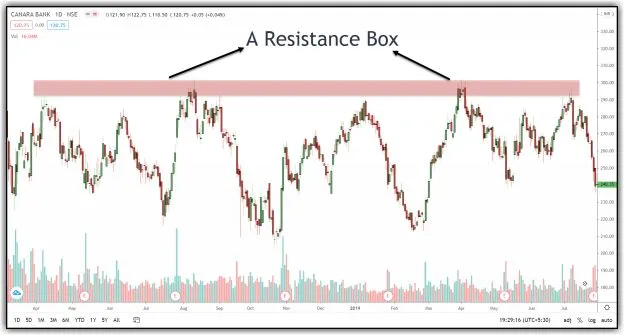
Image 3.7 – A Resistance Box example in Canara Bank
Like a support box, many times, a range of price levels acts as resistance, which can be recognized as a 'Resistance Box.' In image 3.7, the price range between 290-300 served as resistance.
There is no rule in the market that support and resistance lines are perfect horizontal lines. These support and resistance trend lines often come with a small angle, which is also acceptable.
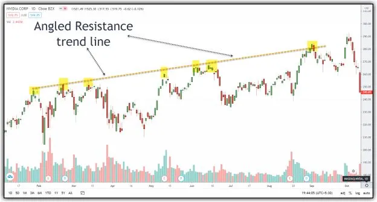
Image 3.8 – Angled Resistance Trend line example in NVIDIA Corp
The above image shows an example of an angled resistance trend line. Whenever the price bounced towards the angled resistance trend line, sellers entered, and their force pushed the price to the downside.
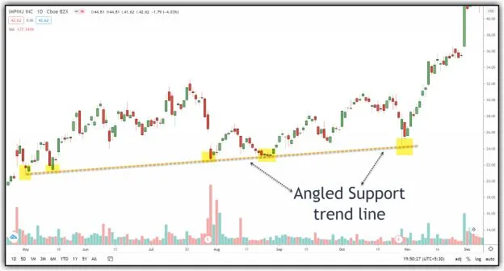
Image 3.9 – Angled Support Trend line example in IMPINJ INC
Whenever the price corrected towards the angled support trend line, buyers entered with buying, and their force pushed the price to the upside.
I am not in a position to give a valid explanation of why and how these angled trend lines work. However, I have seen it works very well with the market. Hence, I have deployed them in my trading.
Do you know why many traders don't get good results with support and resistance trading concepts? Or can you think of any reason why many traders don't believe in or use support & resistance trading concepts in their trading?
It points to one simple reason. They assume that a support trend line always prevents the fall and a resistance trend line always resists the bounce. Besides, they fail to understand when the price will take support at the support line or break the support line. The same explanation goes with the resistance line.
Can you think of any better reason? I am sure there is no other reason.
What if you develop an ability to understand whether the price will take support at a support trend line or not and whether the price will take resistance at a resistance trend line or not? Then you can make profitable trades most of the time, isn't it?
Chapter-4 and Chapter-5 explain this concept in detail. But it would be best if you came out of the primary assumption about the infallibility of these lines. A support level may not act as support every time, and a resistance level may not act as resistance every single time.
I am sure the above question has popped-up in your mind now. But the answer is simple. When the price fails to take support at the support trend line, it gives a big move in the opposite direction, and if we can take this trade, it increases our profits!
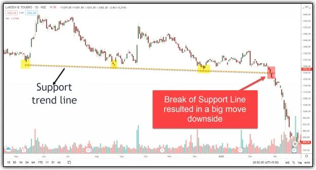
Image 3.10 – Break of Support Line resulted in a big move downside in L.T
The above image shows an example of the failure of the support line. There is a good support trend line on the chart. But when the price reached the support trend line on 25th and 26th Feb, it failed to take support due to the absence of buyers. Hence, it resulted in a big move to the downside. What if you could foresee this and opted for a 'short' trade after the breakdown of the support trend line instead of waiting to take a long trade? You would have made damn good profits, isn't it? It is the reason we need support and resistance trend lines for price action trading.
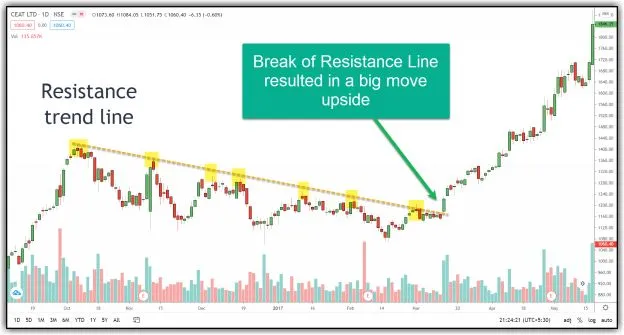
Image 3.11 – Break of Resistance Line resulted in a big move upside in CEAT LTD
The above image shows an example of a failure of the resistance line.
There is a good resistance trend line on the chart. But when price breached
the resistance trend line on 14th March, it resulted in a big move to the
upside.
Again, what if you knew early on that the price will not take resistance
this time? One can take a better entry in the right direction, isn't it?
The real essence of price action trading starts in the next chapter. But I request you to read and understand this chapter thoroughly as this is the core foundation for it.